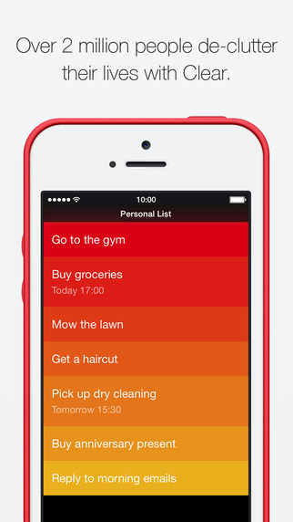

设计的感觉 - Cool
Product Design: 设计的感觉 - Cool
Cool
Cool 似乎是找不到形容词时候的唯一选择，Cool 并不是简单的好看有趣，而是一个准确的视觉体验。对于 App 自身而言，Cool 代表一种生命力， 而 Depth （纵深）这种理念也始终贯穿着。
Ingress
Ingress 是 Google 2012 年上线的一款 LBS 多人游戏，当时我被这个游戏的玩法深深感动了，一向视宅若命的我都不顾夏日的炎热跑出去玩这个游戏。

Ingress 这种虚拟现实的感觉会让人一下子被迷住，地图已经不是我们导航概念里的那种呆板的形象，而变成了一种要去拯救世界的场景。这种风格超过了你对任何一个 LBS 游戏的预期。
而地图中
- 无处不在的粒子特效
- 光晕
- 极强的明暗对比
都让其产生了杀马特般的冲击力。
即使你对出门不感兴趣，但是还是想去探索下这个超酷的软件。那就是 Cool 激发了用户的好奇心。
Smash Hit
前段时间 App Store 推荐的这款 Smash Hit 真应该算是 Cool 的 Best Practice。它通过
- 飘渺的虚拟感
- 神秘朦胧的场景
- 精致的物理特效
给你打造了一个可以释放压力的空间。 虚拟空间更容易让用户产生代入感，按照你的设定，寻着你的逻辑，变成一个中二病。
纪念碑谷——场景互动的极致
场景互动一直是游戏的命根，从早先《仙剑奇侠传》的迷宫，《轩辕剑》里的机关术，《塞尔达传说》里人物与场景的物理互动，再到现在的场景破坏。场景的真实反馈给了用户无限的刺激。
纪念碑谷各个关卡的设定都非常有趣，总是用你想象不到的方式将你带入下一个场景，巧妙利用视差、矛盾空间去构建新的路径。
总结 Cool
- 强烈的视觉风格
- 新奇的氛围体验
- 生动的交互反馈
Cool 的特质如果应用到软件中，那么就是
- 新奇的交互效果
- 让人惊喜的视觉反馈
强烈的设计风格

App 的典型代表是 Clear ，适当的加入 Cool 的这些元素构成，必然让我们的 App 富有生机。